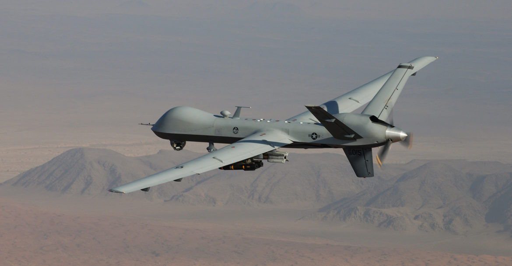
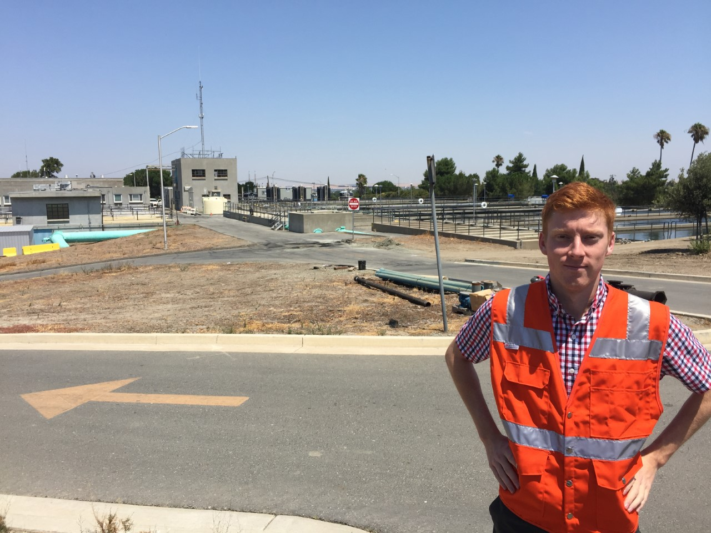

<div class="container-page animated">
  <div class="container-main">
    <div class="animated fadeIn mb-4">
      <h1 class="h1-title">Experience</h1>
      <div id="GA">
        <h2><strong>General Atomics</strong></h2>
        <h3 class="h3-position"><strong>Position Title:</strong> CyberSecurity Engineering Intern</h3>
        <h3 class="h3-date">June 2018 - August 2018</h3>
        <div class="container-desc">
          <p id="p-ga" class="p-section">
            
            At General Atmoics I was employed as a CyberSecurity Engineering Intern in their
            Aeronautical Division. My primary focus for the internship was work revolving around the MQ-9 Reaper.
          </p>
          <ul class="ul-tasks">
            My work on the MQ-9 included;
            <li>
              Writing shell scripts that harden the operating system for various Linux distributions used
              in the ground control station (GCS) testing environment.
            </li>
            <li>
              Assisting in the creation of an Information Assurance Vulnerability Alert plan which directs GCSs
              how to respond to a new system vulnerability.
            </li>
            <li>
              Creating a Mission Essential Factors document which lists out the parts of the MQ-9 GCS that are
              deterimental to operating the drone.
            </li>
          </ul>
        </div>
      </div>
      <div id="TJCAA">
        <h2><strong>TJC and Associates</strong></h2>
        <h3 class="h3-position"><strong>Position Title:</strong> Engineering Intern</h3>
        <h3 class="h3-date">June 2017 - August 2017</h3>
        <div class="container-desc">
            <p id="p-tjc" class="p-section">
              
              TJC and Associates (TJCAA) is an engineering firm primarily focused in Industrial Automation. As my
              first internship, working at TJCAA emphasized to me the importance of accurate work and how a single miscalculation
              or error may have desvastating results to a project.
            </p>
            <ul class="ul-tasks">
              At TJCAA my tasks included;
              <li>
                Writing an Excel Macro in VBA that automated time consuming calculations for a conduit schedule
                saving the company thousands of dollars in time and potential errors.
              </li>
              <li>
                Assiting in the creation a Supervisory Control and Data Acquisition package for a waste water treatment plant
                using Ignition.
              </li>
              <li>
                Backchecking and preforming markups on Mechanical and Electrical drawings preventing costly errors
                on equipment purchases.
              </li>
            </ul>
          </div>
      </div>
    </div>
  </div>
</div>
